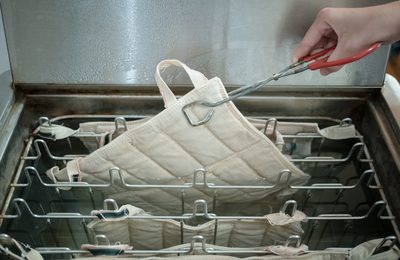

Moist Heat / Ice

The Use Of Moist Heat and Cryotherapy During Your Physical Therapy Treatments
Physical therapists often use treatment modalities (methods of treatment) like moist heat and cryotherapy. These modalities, especially when combined with other therapeutic interventions, can significantly enhance the effectiveness of treatment plans.
Moist Heat Therapy: Gentle Warmth for Healing
Physiological Benefits:
- Improved Blood Flow: Moist heat expands blood vessels, increasing circulation to the affected area, which helps in the healing process.
- Muscle Relaxation: It is effective in easing muscle spasms and relaxing tight muscles, thus reducing discomfort.
- Increased Tissue Elasticity: Heat therapy makes tissues more flexible, aiding in exercises that improve range of motion.
Moist heat therapy (hot packs) commonly are made of clay that is encased in canvas and soaked in a hot bath to heat them up. The hot packs are then wrapped in a towel or pad and applied to the affected area.
Cryotherapy / Ice: A Cold Touch for Pain Relief
Physiological Benefits:
- Pain Relief: The primary benefit of cryotherapy is its ability to numb the treated area, offering immediate relief from acute pain.
- Reduced Nerve Activity: Cold therapy slows down nerve signal transmission, which can help in managing pain.
- Decreased Muscle Spasm: It can also help in reducing the frequency and intensity of muscle spasms.
Cryotherapy or cold therapy commonly comes in the form of ice packs that are placed on the affected area for their desired therapeutic effects. An ice massage is another way to directly apply cold therapy to the area in need.
FAQs
- When is moist heat therapy recommended? It's often suggested for chronic conditions like ongoing joint pain or muscle stiffness.
- How does cryotherapy help in pain relief? By numbing the affected area and slowing nerve signal transmission, cryotherapy can significantly reduce pain sensation.
- Can these therapies be combined? Yes, alternating between heat and cold therapy can be beneficial, depending on the specific condition and under professional guidance.
- What is the ideal duration for applying these therapies? Typically, 15-20 minutes is recommended, but it can vary based on individual needs and the therapist's advice.
Your Physical Therapist Will Discuss The Use Of Moist Heat Or Ice/Cryotherapy And If They Should Be Part Of Your Treatment Plan.
By integrating moist heat and cryotherapy into your treatment (especially at home), you can leverage their benefits for effective pain management and recovery.
Contact Us Today To Learn More About Our Physical Therapy Services. You Can call us at (985) 641-5825
Ready to get started? Call us or request an appointment today.
Call (985) 641-5825 Request Appointment